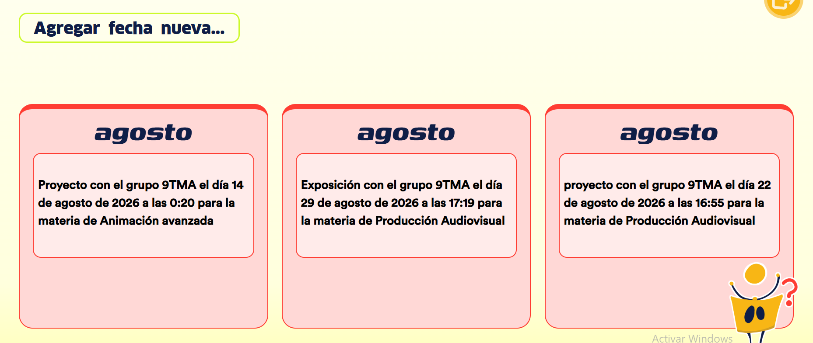

Manual de usuario
''

¡Hola!
¿Te perdiste y no sabes qué hacer?
Selecciona la página en la que te encuentras para obtener más informacion sobre qué es lo que puedes hacer.
Fechas
En esta sección podrás visualizar el calendario y la programación de eventos importantes de tus asignaturas:
- Organización por mes: Consulta los avisos y recordatorios estructurados en tarjetas mensuales.
- Entregas y exposiciones: Revisa el detalle exacto de las fechas de presentación, entregas de proyectos y horarios límite asignados a cada grupo.
- Identificación de materia: Cada tarjeta de evento te indicará el grupo (#X), la materia correspondiente y la hora programada.
